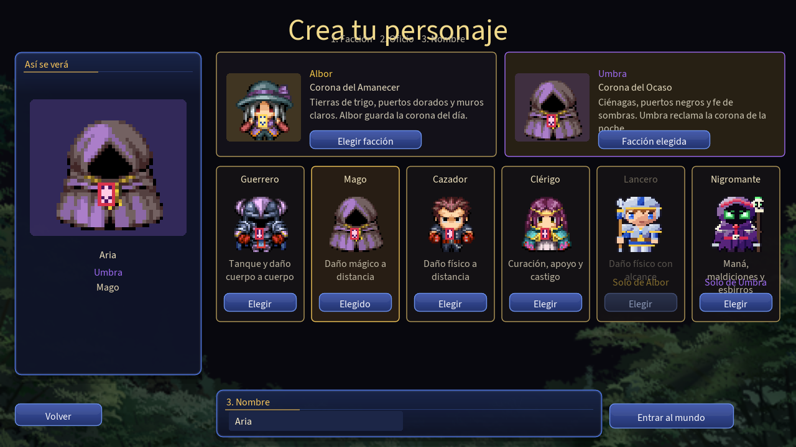
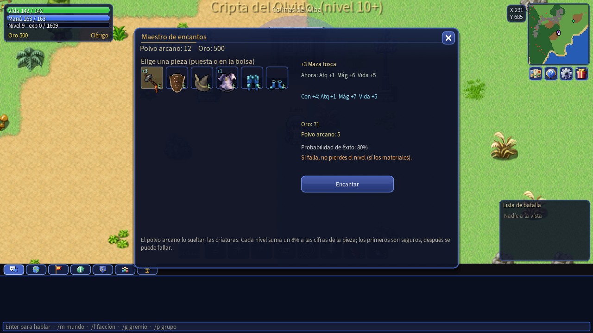
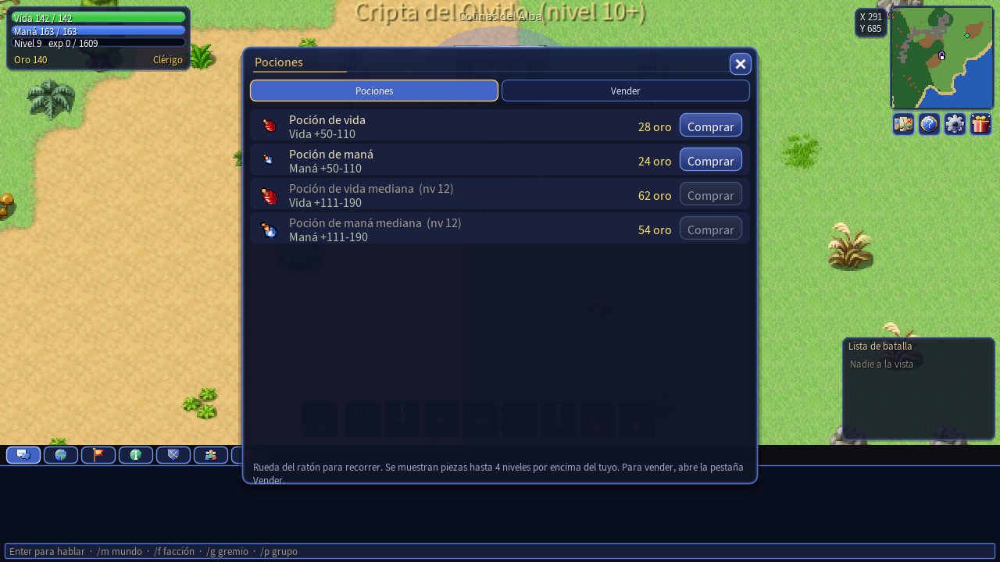

Guía del juego
Todo lo que necesitas para pasar de recién llegado a veterano de la guerra. Si es tu primera vez, empieza por Primeros pasos y Consejos.
Primeros pasos
- Descarga y abre el juego. Descomprime el .zip de la página de descarga y ejecuta DosCoronas.exe. Si Windows avisa de un programa desconocido, pulsa Más información → Ejecutar de todas formas.
- Crea tu cuenta. En el menú elige Registrarte: un usuario y una clave. Una cuenta puede tener varios personajes.
- Crea tu personaje. Elige la facción (Albor o Umbra), el oficio de combate (la clase) y un nombre. Albor suma al Lancero y Umbra al Nigromante; las otras cuatro clases son de las dos.
- Entra al mundo. Empiezas en la ciudad de tu corona, que es refugio: nadie puede atacarte dentro. Habla con los PNJ y sal a cazar.

Controles
| Acción | Tecla o ratón |
|---|---|
| Moverte | WASD o las flechas (casilla a casilla, con diagonales), o clic en el suelo |
| Atacar | Clic en un enemigo (o en la Lista de batalla): lo eliges y lo persigues |
| Siguiente enemigo / soltar objetivo | Tab / Esc |
| Mirar a alguien | Shift + clic: la consola te cuenta qué es |
| Poderes | 1 a 6 |
| Poción de vida / de maná | 7 / 8 |
| Autopoción | R: elige el porcentaje de vida y de maná al que se bebe sola |
| Árbol de poderes | K (cada nivel da un punto) |
| Tu personaje y equipo | C |
| Bolsa | I: un clic elige, otro en la misma casilla equipa, otro en otra casilla intercambia |
| Interactuar (PNJ, puertas, cofres) | E |
| Mapa | M: clic en un punto para viajar hasta allí; rueda para acercar |
| Monturas | U abre la colección · O monta y desmonta |
| Activar o desactivar tu oficio | Y (solo se activa dentro de una ciudad) |
| Grupo | J |
| Item Mall | L |
| Premio diario | F2 o el botón del regalo bajo el minimapa |
| Robar (ladrón) | B |
| Chat | Enter. /m habla al mundo, /f a tu facción, /g a tu gremio, /p a tu grupo |
| Menú del juego (ajustes, salir) | Esc (si hay un panel abierto, lo cierra) |
| Ayuda / medidor de rendimiento / pantalla completa | F1 / F3 / F11 |
Clic derecho sobre otro jugador abre un menú: tratar con él, invitarlo a tu gremio o a tu grupo, o mirarlo.
La pantalla
- Arriba a la izquierda: tu vida, maná, experiencia y oro, y el oficio activo con su carga.
- Arriba a la derecha: el minimapa y, debajo, cuatro botones con icono: mapa, ayuda, menú y el regalo del premio diario (late en dorado cuando hay uno por reclamar).
- Abajo, en el centro: la barra de poderes (1 a 6), las pociones (7 y 8) y la montura. Sobre ella ves los estados y los bonos activos con su duración.
- Abajo a la derecha: la lista de batalla, con los enemigos a la vista.
- Abajo: el chat, con pestañas de icono: todo, mundo, facción, sistema, gremio, grupo y eventos.
- Arriba, cruzando la pantalla de derecha a izquierda: los avisos importantes: eventos de guerra, anuncios de los administradores y los hitos de las capturas.

Clases y poderes
Cada clase tiene seis poderes en la barra (teclas 1 a 6) y un árbol (K) donde gastas un punto por nivel para mejorarlos y desbloquear pasivas. Las cifras son las de nivel 1.
| Clase | Vida | Maná | Ataque | Magia | Defensa | Estilo |
|---|---|---|---|---|---|---|
| Guerrero | 160 | 50 | 15 | 4 | 9 | Tanque y daño cuerpo a cuerpo. Parte a los enemigos en área. |
| Mago | 100 | 160 | 5 | 17 | 3 | Daño mágico a distancia. Frágil y devastador. |
| Cazador | 118 | 90 | 16 | 5 | 5 | Daño físico a distancia, trampas y flechas. |
| Clérigo | 128 | 155 | 5 | 11 | 3 | Cura, bendice y castiga con luz. |
| Lancero (Albor) | 150 | 70 | 16 | 4 | 8 | Daño físico con alcance largo: estocadas, embestidas, tormenta de lanzas. |
| Nigromante (Umbra) | 104 | 175 | 5 | 16 | 3 | Maldice, drena vida y alza esqueletos y espectros que luchan a su lado. |
Mira los seis poderes de cada clase, con su coste y enfriamiento, en la sección de clases.
Poderes de zona
Algunos hechizos (Meteoro, Lluvia de flechas, Tormenta de lanzas, Espinas de hueso) se apuntan: pulsa el poder, mueve el ratón hasta el punto y haz clic. El alcance está limitado; fuera de él, el poder se acorta.
Combate y niveles
- Cada golpe tira entre un mínimo y un máximo que salen de tu ataque (físico o mágico, según la clase) y del poder del golpe. Hay un 8 % de probabilidad de crítico.
- La defensa del objetivo reduce el daño: defensa / (defensa + 40). Los golpes físicos se reducen con Defensa y los mágicos con Defensa mágica (Res).
- El nivel máximo es 30. La experiencia se gana al derrotar criaturas; las de nivel muy inferior al tuyo dan poco.
- Matar da oro y botín, que cae al suelo: recógelo pasando por encima o con clic. El botín puede ser equipo de cualquier oficio, no solo el tuyo: véndelo o cámbialo.
- Si mueres reapareces en tu ciudad. A partir del nivel 10 pierdes el 10 % de la experiencia que pide tu nivel (nunca bajas de nivel).
- Estados: lentitud, aturdimiento, veneno, heridas, escudos y bonos de ataque. Los ves sobre la barra de poderes con su duración.
- Cerca de los grupos aparecen criaturas de grupo y gigantes: más duras y con mejor botín.

Equipo y encantamientos
Tienes nueve huecos: arma, escudo, cabeza, pecho, piernas, pies, anillo, amuleto y mochila. El escudo lo usan Guerrero y Clérigo. Cada clase lleva un tipo de armadura: pesada (Guerrero), ligera (Cazador), de tela (Mago y Clérigo), de lancero y de nigromante.
Ocho escalones
Todo el equipo viene en ocho calidades, cada una con su nivel mínimo: tosca, de soldado, de veterano, de capitán, de campeón, de élite, legendaria y de corona. Cuanto más alto, más ataque, defensa, vida y maná.
Encantar y forjar
- El polvo arcano lo sueltan las criaturas por encima del nivel 10 (con baja probabilidad) y los eventos de guerra. Sirve para encantar tus piezas.
- Encantar cuesta oro y polvo arcano (lo sueltan criaturas altas y los eventos; también se compra en la pestaña Forja del Item Mall). Tiene riesgo: lee el panel antes de confirmar.
- La mochila aumenta los espacios de la bolsa (hasta 24).

El mundo y los viajes
El mundo son tres continentes: Alba al oeste, Umbra al este y la Isla de la Cicatriz en el centro, la zona de guerra. Cada continente tiene ciudades, caminos, puestos y campamentos de criaturas cuyo nivel sube a medida que te alejas de la ciudad.
- Ciudades: son refugio. Dentro nadie puede atacarte. Tienen mercader, armero, establo, mayordomo (casas), heraldo (guerra), maestro de oficios, escribano del gremio, subastador, criador de mascotas y encantador.
- Mapa (M): muestra todo lo que has descubierto con iconos de cada servicio. Haz clic en un sitio para caminar hasta allí.
- Barcos: entre continentes se viaja en barco. En los muelles de Puerto del Sol, Puerto Sombra y del Embarcadero de la Cicatriz hay un barquero (E) que te lleva al instante a cambio de oro. A pie no se cruza el mar.
- Zonas: el nombre de la zona sale arriba en la pantalla al entrar; mira su nivel antes de adentrarte.

Mazmorras
| Mazmorra | Nivel | Jefe |
|---|---|---|
| Cripta del Olvido | 10+ | Señor de la Cripta |
| Foso de las Brasas | 18+ | Titán del Foso |
| Santuario del Eclipse | 25+ | Behemot del Eclipse |
- Las tres puertas de piedra están repartidas por el mapa (violeta en el mapa). Pulsa E junto a la puerta para entrar si tienes el nivel.
- Dentro, las salas se generan con ramas, bucles y callejones: hay varias rutas hasta el jefe, No puedes entrar en pleno combate.
- Trampas: casillas que alternan entre reposo, aviso y activas. Pinchos (9 % de tu vida), fuego (12 %) y gas (3,5 % cada medio segundo). Fíjate en el parpadeo: cuando avisan, aún puedes pasar rápido o rodearlas.
- Las criaturas no reaparecen una a una. Cuando el jefe vuelve (a los 5 minutos de caer), la mazmorra se reinicia y regresan todas.
- El cofre: al caer el jefe aparece un cofre durante 150 segundos. Al abrirlo con E, el premio de cada jugador presente cae al suelo junto a él (600 de oro y un objeto del Item Mall o una pieza de equipo del escalón máximo de cualquier oficio) y el cofre desaparece. Tienes 180 segundos para recogerlo; los addons y las monedas se entregan al momento.

La guerra de las coronas
Dos eventos por equipos. Los lanza el servidor y avisan por la pantalla y el chat unos minutos antes. Para empezar hace falta un mínimo de jugadores por bando (el servidor lo configura; en la beta puede ser bajo).
Batalla por cristales (cada día a las 21:00)
- Dos fortalezas con muro y tres puertas cada una, y un campo en medio con riscos, huecos y caminos que serpentean hasta una plaza central.
- Derriba las estatuas enemigas: sueltan cristales. Recógelos y llévalos al altar de tu base: cada cristal da puntos.
- Quien lleva cristales se ve: halo bajo los pies, cristales girando sobre la cabeza y su nombre con la cantidad. Caza a los portadores enemigos y protege a los tuyos.
Captura del estandarte (cada 4 horas)
- Un campo dividido por un río con tres puentes y dos vados. Albor a un lado, Umbra al otro, cada uno con su bosque, flores o árboles secos.
- Roba el estandarte enemigo en su base y llévalo a la tuya. El portador lleva una bandera a la espalda y un halo; va algo más lento.
- Gana quien consigue tres capturas primero, o quien lleve más cuando se acabe el tiempo.

Premios
Todos los participantes reciben oro, experiencia, polvo arcano, a veces un pergamino y Monedas Corona: 5 si ganas y 2 si pierdes. El estandarte paga 1.000 de oro al bando ganador. Además, tu corona suma gloria.
Oficios y comercio
Un oficio es una profesión extra que se aprende con el Maestro de oficios de una ciudad y se activa con Y (solo dentro de una ciudad). Cambia tu aspecto y tus reglas.
| Oficio | Qué hace |
|---|---|
| Comerciante | Compra mercancías en la ciudad (trigo, vino, telas…) y las vende en otra: cuanto más lejos, más pagan. Solo se compra y vende en ciudades. Puede llevar una montura de transporte (buey, carreta) para cargar más. |
| Cazarrecompensas | Caza a los buscados por la ley. El Capitán de cazadores te enseña el oficio y te muestra el cartel. |
| Ladrón | Roba mercancías a los comerciantes con B y las vende al Contacto en las sombras. Si lo ven, queda buscado durante un rato. |
- Con un oficio activo la facción no te protege: fuera de las ciudades puedes atacar y ser atacado, incluso por tu propia corona.
- Con un oficio activo solo puedes montar monturas de transporte; las normales se desmontan solas.
- Las ciudades siguen siendo refugio para todos.

Monturas y mascotas
Monturas
- Se compran en el establo de cada ciudad (por oro y nivel) o en el Item Mall (las exclusivas con efectos: dragones, fénix, corcel astral, gárgola de oro).
- Tu colección (U) guarda hasta 20 y siempre está a mano. Monta y desmonta con O.
- Las normales las usas sin oficio. Las de transporte (buey, carreta) piden el oficio activo. Las monturas se bajan solas en las casas, en las guerras y al cruzar en barco.
- Montado, los golpes bajan primero la vida de la montura; si cae, necesita descansar antes de volver a usarse.
Mascotas
El Criador de mascotas vende seis: gatito, murciélago, limo guardián, flor curativa, hada y avispa. Se invocan y suben de nivel a tu lado (hasta el tuyo). Cada especie da un beneficio distinto: míralo en el criador antes de adoptar.

Subastas, Item Mall y premios
Casa de subastas
Publica tus objetos y puja por los de otros (Subastador de la ciudad). Hay una comisión del 5 % al publicar y un impuesto del 8 % al vender; cada jugador puede tener hasta 8 subastas, de 1, 6, 12 o 24 horas. Si pujan en el último momento, se alarga un poco.
Item Mall (L)
La tienda de Monedas Corona: bonos de experiencia y botín, polvos de encantamiento, addons (aspectos de personaje únicos) y monturas exclusivas. Las monedas se ganan jugando (premios diarios, eventos y mazmorras). Los bonos siguen contando aunque no estés conectado.
Premio diario
Un premio al día por personaje, con un ciclo de 7 días seguidos: oro según tu nivel, experiencia, Monedas Corona y objetos; el día 7 es el mayor. Si fallas un día, la racha vuelve a 1. Reclámalo con F2 o con el botón del regalo bajo el minimapa.
Encargos
El Tablón de encargos da misiones de caza con recompensa. Avanzan solas al derrotar a las criaturas pedidas.
Consejos para empezar
- Gasta tus puntos del árbol (K) en cuanto subas de nivel: son la mejora más fácil.
- Lleva siempre pociones en 7 y 8 y configura la autopoción con R.
- Mira el nivel de la zona antes de entrar. Los campamentos cercanos a la ciudad son para los primeros niveles.
- Forma grupo: es más experiencia y mejor botín que cazar solo, y las mazmorras sin clérigo cuestan.
- Reclama el premio diario cada día: los 7 días seguidos dan el mejor premio.
- Mira siempre el chat de Eventos: ahí salen los avisos de la guerra.
- No salgas de la ciudad con un oficio activo sin saber a qué te expones: cualquiera puede atacarte.
- El botín puede ser equipo de otra clase: no lo tires, véndelo o ponlo en la subasta.
- Guarda un poco de oro para el pasaje del barco: así puedes cruzar a otro continente en cuanto lo necesites.
Problemas frecuentes
Windows dice que el programa es desconocido
El juego no está firmado digitalmente. Pulsa Más información → Ejecutar de todas formas. Puedes comprobar que el archivo es el original comparando su huella SHA-256 con la de la página de descarga.
El antivirus lo borra o lo bloquea
Algunos antivirus desconfían de los juegos nuevos. Añade la carpeta del juego a las exclusiones y vuelve a descomprimir el .zip.
No conecta con el servidor
- Comprueba tu conexión a internet y que el cortafuegos de Windows permite el juego (si preguntó la primera vez, di que sí).
- Algunas redes de empresa o universidad bloquean puertos poco habituales: prueba con otra red o con los datos del móvil.
- Si el servidor de la beta se está reiniciando, espera un minuto y vuelve a intentarlo.
"Ese personaje ya está en el mundo"
Tu personaje sigue conectado por una sesión anterior. Espera unos segundos a que el servidor lo guarde y lo desconecte, y entra de nuevo.
El juego va lento
Pulsa F3 para ver el medidor de rendimiento. Cierra otros programas pesados y asegúrate de tener los controladores de la tarjeta gráfica actualizados (hace falta OpenGL 2.1).
Se pierde progreso al cerrar
El servidor guarda tu personaje al instante cuando sales y cada pocos minutos mientras juegas. Sal siempre con Esc → salir en lugar de cerrar a la fuerza.
/m).
Grupos, gremios y casas
Grupos
/p.Gremios
Funda uno con el Escribano del gremio (nivel 8 y 1.500 de oro). Hasta 25 miembros, chat propio (
/g) y un bono de experiencia por compañero cerca. Invita con clic derecho sobre otro jugador.Casas
El Mayordomo de la ciudad vende casas. La tuya se ve dorada en la calle. Dentro hay una cama, un cofre, una mesa y un estandarte: clic en un mueble y luego en el suelo para moverlo; clic derecho lo rota. La puerta del sur es la salida. Los muebles y el cofre se guardan con tu personaje.